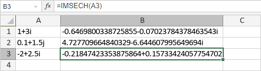

IMSECH Funkcija
Funkcija IMSECH je jedna od inženjerskih funkcija. Koristi se za vraćanje hiperboličkog sekansa kompleksnog broja.
Sintaksa
IMSECH(inumber)
Funkcija IMSECH ima sledeći argument:
| Argument | Opis |
|---|---|
| inumber | Kompleksni broj izražen u obliku x + yi ili x + yj. |
Napomene
Kako primeniti funkciju IMSECH.
Primeri
Slika ispod prikazuje rezultat koji vraća funkcija IMSECH.
